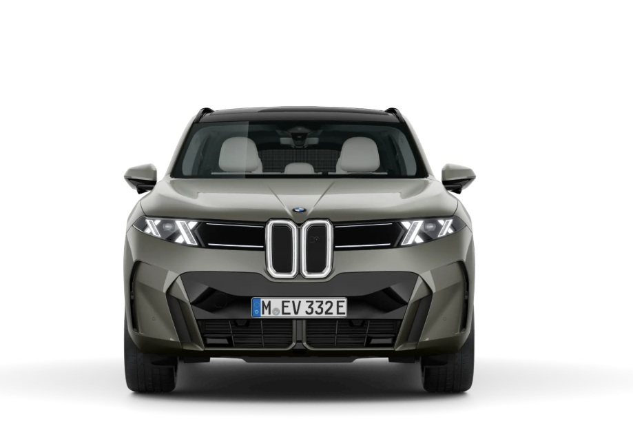
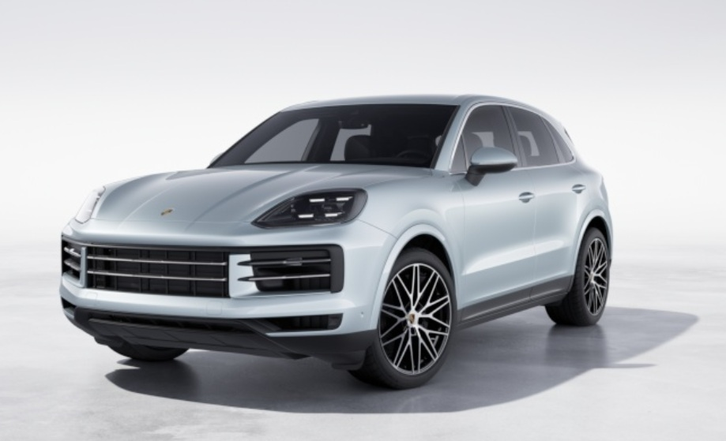

BMW X5

Motor elétrico Potência (nominal)/potência durante 30 minutos em kW (cv) 13 (18) / - Binário (nominal) em Nm 200 Desempenho Aceleração 0–100 km/h em seg. 5,3 Velocidade máxima em km/h 250 Consumo/emissões 1 , 3 Consumo de combustível, combinado, WLTP em l/100 km 9–8,6 Emissões de CO₂, combinadas, WLTP em g/km 205–196
Mercedes-AMG G 63
Emissões de CO₂ totais (combinadas) 335 g/km[a] Consumo combinado total (combinado) 14,7 l/100km[a] Motorização Tipo de combustível Super 98 Tipo de híbrido Semi-híbrido Cilindros V8 Cilindrada 3 982 cc Potência 430 kW + 15 kW (585 CV + 20 CV)[b] Binário 850 Nm Transmissão Caixa Automática AMG SPEEDSHIFT TCT 9G Categoria de transmissão Automático Norma para gases de escape Euro 6e-bis Aceleração 0-100 km/h 4,4 s Velocidade máxima 220 km/h
Porshe Cayenne

A gama Cayenne. O Cayenne é o automóvel desportivo entre os SUV. Combina uma dinâmica de condução desportiva com o conforto do dia a dia. Para aqueles que se recusam a fazer concessões. Basta decidir qual a motorização e o estilo de carroçaria que melhor se adaptam a si.